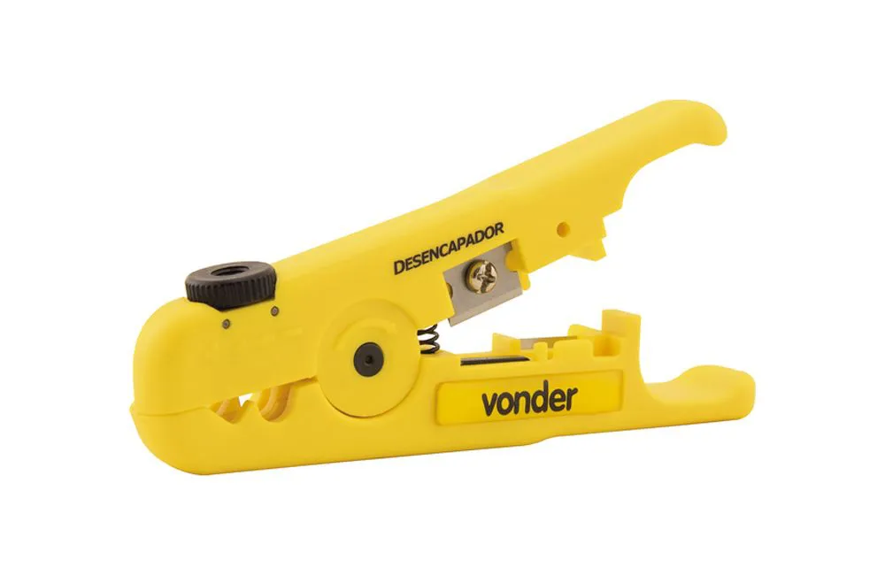

Decapador de Cabos
O decapador de cabos é uma ferramenta manual essencial utilizada para remover o isolamento externo (capa) de fios e cabos elétricos ou de comunicação, sem danificar os condutores internos. É uma ferramenta fundamental para eletricistas, técnicos de rede e entusiastas de eletrónica.

Para que serve?
A principal função do decapador de cabos é preparar os fios para conexões elétricas, soldagem ou crimpagem. Ele é utilizado para:
-
Remover o isolamento de forma precisa: Permite retirar a capa protetora do cabo em um comprimento exato, expondo apenas a parte necessária do condutor.
-
Evitar danos aos condutores: Diferente de uma faca ou tesoura, um decapador é projetado para cortar apenas o isolamento, minimizando o risco de cortar ou entalhar os fios metálicos internos, o que poderia comprometer a integridade da conexão.
-
Agilizar o trabalho: Torna o processo de preparação de cabos mais rápido e eficiente, especialmente em projetos que exigem muitas terminações.
-
Garantir segurança: Ajuda a criar conexões mais seguras, pois fios danificados podem levar a curtos-circuitos ou mau funcionamento.
Tipos de Decapadores de Cabos
Existem vários tipos de decapadores de cabos, cada um adequado para diferentes aplicações:
-
Decapador Manual Simples: Geralmente integrado em alicates de crimpagem ou ferramentas multifuncionais, possui orifícios de diferentes tamanhos para decapar fios de diversas bitolas.
-
Decapador Ajustável: Permite ajustar a lâmina para a bitola exata do fio, oferecendo maior precisão.
-
Decapador Automático: É o tipo mais prático, pois ajusta-se automaticamente à bitola do fio e remove o isolamento com um único movimento de aperto. Ideal para uso frequente.
-
Decapador de Cabos Coaxiais: Ferramenta específica para cabos coaxiais, que remove múltiplas camadas de isolamento em uma única operação.
-
Decapador de Cabos de Rede (UTP/STP): Muitos alicates de crimpagem RJ45 já possuem essa função integrada, projetada para a capa externa desses cabos.
Como usar? (Guia Geral)
Embora o método exato varie com o tipo de decapador, os passos gerais são:
-
Selecione a bitola correta: Se o decapador for ajustável ou tiver orifícios de bitola fixa, escolha o que corresponde ao diâmetro do seu fio.
-
Insira o cabo: Coloque a ponta do cabo no orifício ou na lâmina do decapador.
-
Aperte e puxe: Aperte as alças do decapador (ou gire, dependendo do modelo) para que as lâminas cortem o isolamento. Em seguida, puxe o cabo para remover a seção decapada do isolamento.
-
Verifique: Inspecione o fio para garantir que o isolamento foi removido de forma limpa e que os condutores internos não foram danificados.
Dica de segurança: Sempre utilize equipamentos de proteção individual, como óculos de segurança, ao trabalhar com ferramentas e eletricidade.
Onde comprar?
Decapadores de cabos podem ser encontrados em diversas lojas físicas e online especializadas em ferramentas e materiais elétricos, como:
- Lojas de materiais de construção e bricolagem
- Lojas de eletrónica e componentes
- Grandes varejistas online (Amazon, Mercado Livre, etc.)
- Lojas especializadas em ferramentas elétricas
Marcas conhecidas pela qualidade de seus decapadores incluem Stanley, Tramontina PRO, Vonder, Gedore e King Tony, entre outras.